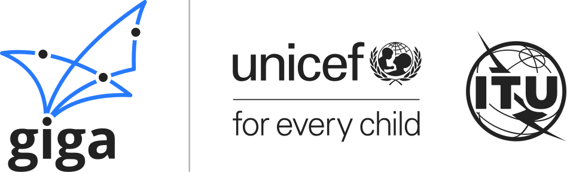

A closer look at Ethereum in use
Projects led by governments, multilateral organizations, and their partners, examining the role Ethereum played, the choices that shaped each system, and what the results can tell us so far.
Ethereum in practice, across sectors
Explore how governments, UN bodies, nonprofits, and other institutions have used Ethereum for digital identity, public records, humanitarian aid, and funding transparency.
-

Bhutan National Digital Identity
449k+ users successfully onboarded to Bhutan NDI by the end of 2025
Bhutan's national digital identity system uses Ethereum to support the verification of digital credentials across public and private services. Individuals control what information they share, while personal data remains outside the blockchain.
-

UNICEF CryptoFund
$4m+ equivalent invested since 2019, including 2,602 ETH and 5.82 BTC
UNICEF’s CryptoFund provides funding in cryptocurrency to startups developing open-source technology in emerging economies. Transfers made in ETH are recorded on Ethereum, where they can be independently verified and traced.
-
ITCILO digital credentials
208k+ blockchain-secured credentials issued by October 2025
ITCILO issues digital certificates and badges that can be independently verified using Ethereum. Learners can share their credentials with employers and institutions without needing a cryptocurrency wallet or technical knowledge of Ethereum.
-

Giga school connectivity
~$5.6k in school internet fees funded by Ethereum staking rewards
Giga, a joint initiative of UNICEF and ITU, worked with the Government of Rwanda to test whether Ethereum staking rewards could provide a recurring source of financing for school connectivity.
-
Stake2Care
3.44 stETH staking rewards generated in 2025 for MSF’s emergency fund
Stake2Care enables supporters to direct Ethereum staking rewards to Médecins Sans Frontières’ emergency fund, offering an additional way to support rapid medical responses to humanitarian crises.
Further case studies
Discover more approaches across public services, community funding, and environmental protection, including early experiments and lessons from completed projects.
Identity and credentials
Funding and resource allocation
-
Anticipatory cash transfers in Kenya
Using Ethereum smart contracts to release drought-related cash assistance when predefined vegetation thresholds are met, with recipients receiving local-currency payments through M-Pesa. -
Sarafu Network
A community exchange network using digital vouchers to support local trade in Kenya, built on Celo, which later became an Ethereum layer 2 network. -
UNICEF × Gitcoin quadratic funding
A funding round in which community contributions helped determine how matching funds were allocated to digital public goods.
Transparency and traceability
-
Enaleia Hub
Exploring shared records that support traceability of marine plastic from collection through recycling and manufacturing. -
Public funding disclosures in Canada
A completed Canadian government pilot testing whether Ethereum could support timely, independently verifiable public funding disclosures and amendments. -
Verifiable US economic data
A US Department of Commerce initiative combining a verifiable reference to an official GDP release with ongoing economic data feeds across Ethereum and other public blockchain networks.
Culture and community
-
MetaHistory NFT Museum
Digital artworks issued on Ethereum that pair reporting on the war in Ukraine with artists’ interpretations, while raising funds for Ukraine and cultural recovery. -
Nishikigoi NFT
Digital community membership on Ethereum connecting supporters around the world with Yamakoshi, a rural community in Japan, and supporting participation in local projects. -
UN Crypto Stamp
United Nations postage stamps paired with digital collectibles issued on Ethereum, with ownership recorded publicly on the network.